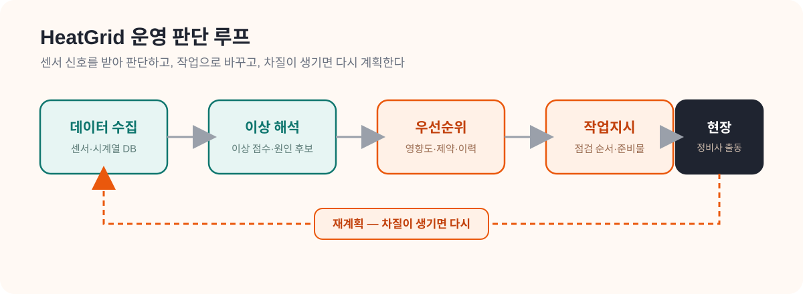
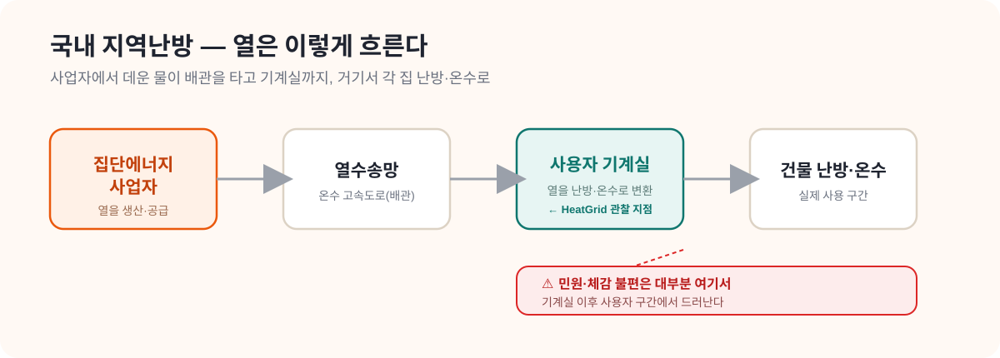
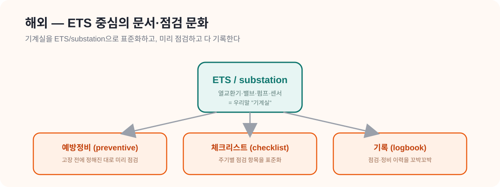
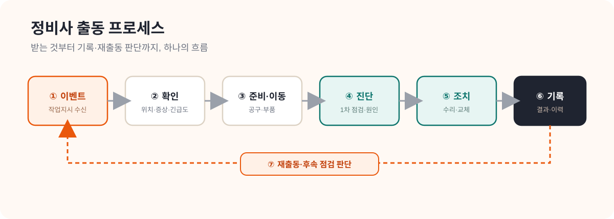
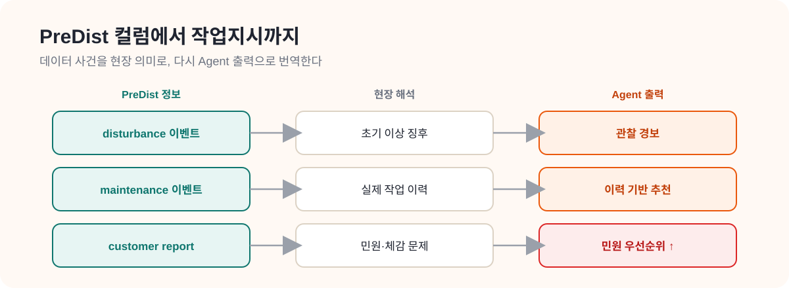

HeatGrid Domain Guide
0. 이 가이드의 목표
이 가이드는 도메인 지식이 거의 없는 사람도 PreDist 기반 HeatGrid Agent를 설계할 수 있는 수준까지 끌어올리는 것을 목표로 한다.
이 문서를 모두 따라가면 아래를 설명할 수 있어야 한다.
- 지역난방 기계실이 무엇을 하는지
- PreDist가 어떤 데이터를 주는지
- 어떤 센서가 어떤 부품 상태를 반영하는지
- 주요 고장이 센서에서 어떻게 보이는지
- 정비사는 어떤 순서로 일하는지
- 운영자는 왜 리드타임만으로 판단하지 않는지
- HeatGrid Agent가 어떤 입력으로 우선순위와 재계획을 수행하는지
HeatGrid는 단순한 이상탐지 모델이 아니라, 센서 신호를 운영 판단과 작업지시로 이어 붙이는 시스템이다. 그래서 데이터만 알아도 안 되고, 현장 구조만 알아도 안 되며, 두 세계를 연결하는 흐름을 한 번에 잡아야 한다.

지금 중요한 한 줄
HeatGrid의 핵심은 센서값을 읽는 것이 아니라 센서 변화가 현장 운영에서 무슨 의미인지 해석하고, 지금 무엇을 먼저 해야 하는지 정하는 것이다.
도메인 질문
기계실은 무엇을 하고, 어떤 고장이 실제 문제를 만드는가.
데이터 질문
PreDist 컬럼이 어떤 부품과 현상으로 이어지는가.
Agent 질문
탐지 결과를 어떤 우선순위와 작업지시로 바꿀 것인가.
1. 데이터 연결 자료
먼저 읽을 문서
핵심 이해 포인트
- PreDist는 지역난방 기계실의
실제 운영 시계열 + disturbance/maintenance/customer report 이벤트 라벨을 함께 제공한다. - HeatGrid는 이 데이터를 단순 예측용 CSV가 아니라
운영 의사결정의 입력 스트림으로 사용한다. - 중요한 것은 단일 값이 아니라
시간 흐름에 따른 패턴,정상 대비 이탈,이상 발생 후 조짐이다.
센서 데이터는 숫자 표가 아니라 현장의 상태 변화 기록이다. 공급온도 하락, 유량 불안정, 밸브 개도 이상이 한 번에 보이면 현장에서는 바로 같은 사건으로 묶어서 해석한다.
이 내용을 이해하면 할 수 있는 것
- PreDist의 목적과 구성 요소를 설명할 수 있다.
- 데이터 컬럼을 설비와 센서 관점으로 읽을 준비가 된다.
다음에 읽을 문서
2. 지역난방 구조와 운영 이해 자료
2-1. 국내 지역난방 구조와 운영
먼저 03_국내_지역난방_구조와_운영_가이드.md를 읽는다.

핵심은 아래다.
- 국내는
집단에너지 사업자 -> 열수송망 -> 사용자 기계실 -> 건물 난방/급탕흐름으로 이해하면 된다. - 운영은 민원, 긴급신고, 정기점검, 사용자 설비 지원사업, 협력업체 출동으로 이어진다.
- 국내 자료를 보면 점검과 지원은 존재하지만
우선순위화와 재계획 자동화는 아직 약하다.
2-2. 해외 지역난방 구조와 운영
다음으로 04_해외_지역난방_구조와_운영_가이드.md를 읽는다.

핵심은 아래다.
- 해외는
ETS(Energy Transfer Station)또는 substation을 중심으로 설비 구조와 점검 체계를 표준화한다. - preventive maintenance, checklist, logbook, maintenance policy 문화가 문서로 명확하다.
- HeatGrid는 국내 운영 흐름 위에 해외식
체크리스트 기반 예방정비문화를 붙이는 방향으로 설계할 수 있다.
국내/해외 비교 표
| 항목 | 국내 | 해외 | HeatGrid 시사점 |
|---|---|---|---|
| 운영 주체 | 사업자, FM, 협력업체가 혼합 | 사업자와 표준화된 유지관리 체계가 결합 | 역할 기반 권한과 알림 구분이 필요 |
| 설비 범위 | 사용자 기계실과 민원 대응 비중이 큼 | ETS/substation 단위 설계와 유지관리 비중이 큼 | 기계실 운영과 설비 표준을 함께 모델링해야 함 |
| 점검 방식 | 자체점검, 민원 대응, 정기점검 혼합 | checklist 중심의 예방정비가 분명 | 작업지시서에 체크리스트를 붙여야 함 |
| 예방정비 문화 | 존재하지만 문서화 수준 편차가 큼 | maintenance policy가 명확 | 예방정비 추천 기능의 근거를 문서화해야 함 |
| 작업지시 체계 | 경험 기반 의존도가 큼 | 로그북, 점검표, 기록 체계가 강함 | 설명 가능한 Agent 출력이 중요 |
이 내용을 이해하면 할 수 있는 것
- 왜 HeatGrid가 단순 건물 설비가 아니라 지역난방 운영 맥락을 다루는지 설명할 수 있다.
- 국내와 해외 자료를 비교하면서 설계 언어를 고를 수 있다.
다음에 읽을 문서
- 05_District_Heating_Substations_Design_요약.md
- 06_Gebwell_OandM_요약.md
- 07_IEA_DHC_Connection_Handbook_요약.md
3. 정비사와 정비회사 관점 자료
먼저 읽을 문서

핵심 이해 포인트
- 정비는 단순히 부품을 교체하는 일이 아니라
이벤트 수신 -> 현장 이동 -> 원인 진단 -> 조치 수행 -> 기록의 연속이다. - 정비사 관점에서는
무엇을 들고 가야 하는지,어떤 체크를 먼저 해야 하는지,작업 후 무엇을 기록해야 하는지가 중요하다. - 따라서 HeatGrid의 좋은 출력은
이상 점수가 아니라점검 순서와 작업지시에 가깝다.
이 내용을 이해하면 할 수 있는 것
- 정비사 입장에서 유용한 Agent 출력 형태를 상상할 수 있다.
다음에 읽을 문서
4. 국내 시장/정책/사업자 자료
먼저 읽을 문서
핵심 이해 포인트
- 국내 집단에너지 시장은 작지 않다.
- 한국지역난방공사, GS파워, 대성에너지 등 사업자와 HDC랩스, SK쉴더스 FM 같은 운영 주체가 함께 존재한다.
- 정책 방향은
설비 진단,AI,에너지 효율,스마트 유지관리와 맞닿아 있다.
이 내용을 이해하면 할 수 있는 것
- HeatGrid의 고객, 사용자, 구매자, 영향자를 분리해서 설명할 수 있다.
다음에 읽을 문서
5. 센서 변수 사전
| 변수/센서 | 물리 의미 | 이상 시 해석 | 현장 점검 항목 | Agent 출력 |
|---|---|---|---|---|
| 공급온도 | 열이 사용자측으로 들어가는 온도 | 목표보다 낮으면 공급 부족 가능성 | 열원측 상태, 열교환기, 제어값 확인 | 민원 위험 경보 |
| 환수온도 | 열을 전달한 뒤 돌아오는 온도 | 과도하게 높으면 열교환 비효율 가능성 | 열교환기 fouling, 유량, 제어기 점검 | 효율 저하 경보 |
| 유량 | 물이 얼마나 흐르는지 | 급감하거나 흔들리면 펌프/밸브/차압 문제 가능성 | 펌프 운전, 밸브 개도, 차압 확인 | 긴급 점검 또는 관찰 지시 |
| 차압 | 전후 압력 차이 | 비정상적이면 제어기 오동작이나 막힘 가능성 | 차압계, 필터, 배관 저항 확인 | 점검 우선순위 상향 |
| 밸브 개도 | 제어 명령 대비 밸브 상태 | 명령과 반응이 다르면 액추에이터 또는 밸브 이상 | 수동 조작, 피드백 신호 확인 | 제어 이상 작업지시 |
| 전력/펌프 상태 | 펌프 운전 상태 | 전력 패턴 이상, 운전 불안정 | 베어링, 전원, 진동, 소음 점검 | 펌프 이상 예보 |
6. 대표 고장 taxonomy
| 고장/이상 | 주요 징후 | 운영 영향 | 현장 점검 항목 |
|---|---|---|---|
| 스트레이너 막힘 | 유량 저하, 차압 증가 | 공급 부족, 효율 저하 | 필터 오염, 이물질 점검 |
| 펌프 성능 저하 | 순환 불안정, 전력 패턴 이상 | 난방 불안정, 민원 증가 | 소음, 진동, 전원, 차압 확인 |
| 열교환기 fouling | 공급은 되나 효율 저하 | 에너지 손실, 응답 지연 | 온도차, 압력손실, 세척 필요성 점검 |
| 제어밸브/액추에이터 이상 | 명령 대비 반응 불일치 | 제어 불안정, 온도 편차 | 밸브 피드백, 수동 테스트 |
| 센서 이상 | 스파이크, 고정값, 물리적으로 불가능한 값 | 오탐 증가 | 교정, 배선, 센서 교체 여부 확인 |
7. 정상 패턴 vs 이상 패턴
- 정상 패턴에서는 공급온도, 환수온도, 유량, 차압이 부하 변화에 맞춰 서로 연동된다.
- 이상 패턴에서는
한 값의 크기보다관계의 깨짐이 더 중요하다. - HeatGrid는 threshold만 보는 구조보다
패턴 이탈,반응 지연,명령-응답 불일치를 읽어야 한다.
8. 운영 우선순위화와 재계획
운영자가 실제로 결정하는 것은 무엇이 위험한가가 아니라 지금 무엇을 먼저 볼 것인가다.
우선순위 입력
- 리드타임
- 영향도
- 민원 가능성
- 안전 리스크
- 출동 가능 인력
- 부품 확보 여부
- 같은 권역 내 다른 작업과의 충돌
재계획이 필요한 상황
- 같은 날 긴급 고장과 일반 이상이 동시에 발생
- 부품이 없거나 출동 가능한 인력이 제한
- 예상 원인과 실제 현장이 다름
따라서 HeatGrid는 리드타임 예측 모델로 끝나지 않고 우선순위 엔진 + 작업지시 + 재계획 루프까지 가져가야 한다.
9. PreDist 데이터 해석

PreDist를 읽을 때의 질문
- 이 컬럼은 어떤 센서를 나타내는가
- 이 이벤트는 현장에서 어떤 사건을 뜻하는가
- 이 이상은 어떤 부품 또는 운영 문제와 연결되는가
- 이 신호를 Agent가 받으면 어떤 액션으로 이어져야 하는가
매핑 표
| PreDist 정보 | 물리 의미 | 현장 해석 | Agent 출력 |
|---|---|---|---|
| disturbance 이벤트 | 정상 운전에서 벗어난 사건 | 초기 이상 징후 | 관찰 경보 |
| maintenance 이벤트 | 정비 개입 시점 | 실제 작업 이력 | 작업이력 기반 추천 |
| customer report 이벤트 | 사용자의 불편 체감 | 민원과 연결되는 운영 문제 | 민원 우선순위 상향 |
이 내용을 이해하면 할 수 있는 것
- PreDist 컬럼을 물리 현상과 연결해서 읽을 수 있다.
- 데이터 분석 결과를 작업지시로 이어 붙이는 기준을 세울 수 있다.
10. HeatGrid Agent 설계 연결
HeatGrid는 “센서값을 읽는 모델”이 아니라 “운영 상황을 해석하고, 지금 필요한 작업을 제안하며, 차질이 생기면 다시 계획을 짜는 시스템”이라고 이해하면 가장 빠르다.
HeatGrid에서 역할 분리는 아래처럼 가는 것이 자연스럽다.
| 계층 | 역할 |
|---|---|
| 데이터 계층 | MQTT/시계열 DB로 기계실 데이터를 수집 |
| 모델 계층 | anomaly score, 리드타임, 위험도 계산 |
| 우선순위 계층 | 영향도, 제약, 이력 반영 |
| Agent 계층 | 계획 수립, 작업지시 생성, 재계획 |
| 운영 인터페이스 | 대시보드, 코파일럿, 작업 오더 |
한 문장 정의
HeatGrid는 지역난방 기계실의 데이터를 읽고 이상 징후를 해석한 뒤, 제한된 자원 아래 무엇을 먼저 어떻게 대응할지 계획하고 차질이 생기면 다시 재계획하는 운영 AIoT Agent다.